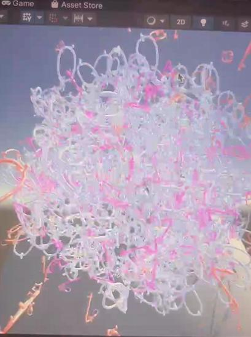

Video
Video from this 0&1
Images
我使用了unity引擎人脸跟踪技术，该技术将对模型进行编码，以跟踪人脸并进行叠加。我建立了四到五个这样的模型，并使用多人脸跟踪代码允许他们随机跟踪人脸。该技术是一种用于多人脸跟踪的脚本，使用AR Foundation的AR Face Management来检测和跟踪场景中的人脸，并在每个检测到的人脸上放置随机选择的模型。
我之所以选择广告牌模型和表情符号元素，是因为我认为我们生活中的数字化社交和数字化宣传在很大程度上已经取代了传统的社交和传统的宣传方法，尤其是在网络上广告已经无处不在，数字不仅涵盖了人们的外表，还涵盖了他们的情绪，许多人已经失去了他们的真实自我，总是在网络以“包装”出的自我形象与他人交流。表情符号的动画脚本用于控制其浮动，sin函数用于计算球的新坐标，实现球体在垂直方向上的周期性移动，shader用于控制对象的颜色和纹理以实现颜色梯度效果。